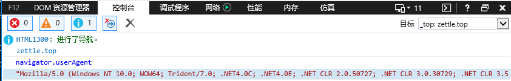
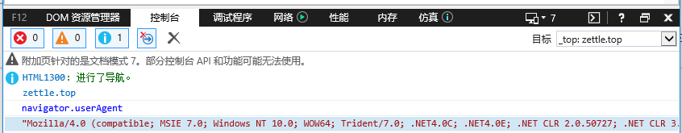
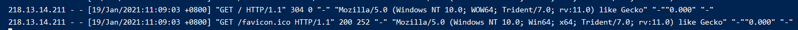
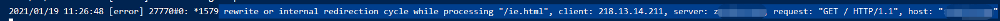

013-nginx重写
1、常用重写命令
if (条件) {} # 设定条件，再进行重写
set # 设置变量
return # 返回状态码
break # 跳出rewrite
rewrite # 重写
2、if判断
格式:
if (条件) { # 注意if后面的空格不能省
重写模式
}
条件支持下面几种写法:
=: 判断是否相等，用于字符串比较~: 用正则匹配，区分大小写~|~*: 用正则匹配，不区分大小写-f: 来判断是否为文件-d: 来判断是否为目录-e: 来判断是否存在
2.1 场景1：禁止某些IP访问
比如现在访问 http://aaa.com 访问了项目A的前端代码
server {
listen 80;
server_name aaa.com;
location / {
root /root/svr/aaa;
index index.html index.htm;
}
}
我们现在加个判断，如果是指定IP的，就不给访问了
server {
listen 80;
server_name aaa.com;
location / {
# 如果客户端IP=218.13.14.211就返回403状态码
# 客户端IP可以去 log/access.log 中访问日志看
if ($remote_addr = 218.13.14.211) {
return 403;
}
root /root/svr/aaa;
index index.html index.htm;
}
}
2.2 场景2： 用IE浏览器访问提示升级
比如现在访问 http://aaa.com 访问了项目A的前端代码
server {
listen 80;
server_name aaa.com;
location / {
root /root/svr/aaa;
index index.html index.htm;
}
}
我们想要实现这种效果：用户用IE浏览器访问的时候，就出现我们的提示升级页面
server {
listen 80;
server_name aaa.com;
location / {
# 网上很多写的是 $http_user_agent ~ MISE
if ($http_user_agent ~ Trident) {
rewrite ^.*$ /ie.html;
break; # 这里不能省略
}
root /root/svr/aaa;
index index.html index.htm;
}
}
- 网上很多写的是
$http_user_agent ~ MISE。因为测试的时候，电脑已经是IE11，IE11不再有MISE的ua，就算是在IE11上切换成低版本的，也不会影响nginx获取到的ua
IE原来的UA

切换成IE7后，用JS获取的UA

但是在nginx中获取的UA

可以看出来，就算是IE切换了版本，获取的还是原来的UA
break不能省 记住break不能省，否则会死循环，去掉后，用IE访问出现500错误
去 log/error.log 里面看日志，可以发现是死循环了: rewrite or internal redirection cycle while processing "/ie.html", client: 218.13.14.211, server: aaa.com, request: "GET / HTTP/1.1", host: "aaa.com"

这是因为不加break后，nginx匹配进入然后出发rewrite，接着内部uri跳转请求/ie.html，这个时候又匹配中了
- 按照上面配置，
ie.html的位置应该在/root/svr/aaa/ie.html这里
2.3 场景3： 找不到返回特定页面
访问 http://aaa.com，访问 http://aaaa.com/aa.html并不存在返回我们指定的页面，当然我们也可以用error_page配置，不过这里专门演示下-e的用法。
location / {
if (!-e $document_root$fastcgi_script_name) {
rewrite ^.*$ /nofind.html;
break;
}
root /root/svr/aaa;
index index.html index.htm;
}
$document_root$fastcgi_script_name表示访问的是linux的哪个文件夹，比如访问http://aaaa.com/aa.html，则$document_root$fastcgi_script_name = /root/svr/aaa/aa.htmlbreak必须加上，不然会进入循环
3、set 设置变量
if ($http_user_agent ~* mise) {
set $isIE 1; # 如果ua中含有mise就设置$isIE=1
}
if ($fastcgi_script_name = ie.html) {
set $isIE 0; # 如果访问的是ie.html就设置$isIE=0
}
if ($isIE = 1) {
rewrite ^.*% ie.html; # 如果$isIE就rewrite到ie.html
}
上面的等同break
if ($fastcgi_script_name = ie.html) {
rewrite ^.*% ie.html;
break;
}